1941 год. Прончейково и его окрестности
Там, где сегодня стоит наша школа и где мы живем, когда-то разворачивались события, навсегда изменившие судьбы людей. В годы Великой Отечественной войны в деревне Прончейково, которая находится рядом с Селевцами, жила семья Дубонос. Их личная история стала маленьким, но очень важным звеном большой военной летописи.
Глава семьи — Иван Григорьевич Дубонос — был одним из организаторов партизанского отряда имени И.П. Кузнецова. Его жена Христина Яковлевна и дочь Вера стали партизанками бригады имени В.П. Чкалова.
Подробности этой истории мы узнали от Ады Антоновны Кобан — дочери Веры Ивановны и внучки Ивана Григорьевича и Христины Яковлевны. К сожалению, не все, кто прошел через тяжелые испытания войны, могли говорить о пережитом. Тяжелые воспоминания заставляли многих ветеранов хранить молчание, не рассказывая о тех временах даже самым близким.
Именно поэтому рассказы Ады Антоновны, которая бережно сохранила и передала нам воспоминания своей мамы и бабушки, имеют особую ценность. Это не просто сухие строки из архивов, а живая история, услышанная от очевидцев и сохраненная для нас благодаря связи поколений.
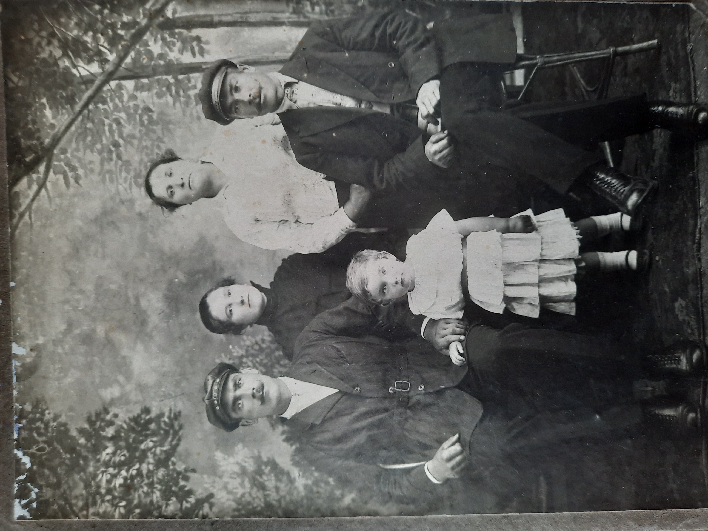
Несмотря на длительные слухи о предстоящей войне, нападение фашистов оказалось неожиданным.
«Мама рассказывала, что 22 июня 1941 года они всей семьей собирались в гости, а в небе летали самолеты, стоял гул. Бабушка не могла понять, почему их так много, а дед сразу сказал, что это война».
Хорошо подготовленная и технически оснащенная армия наступала так быстро, что на четвертый день войны, в среду, 25 июня, фашисты уже были в Молодечно. Из-за быстрого наступления немецких войск мобилизация в Красную Армию не была проведена, поэтому в деревнях остались мужчины призывного возраста. В эти тревожные дни в деревне Селевцы и ее окрестностях начали появляться солдаты Красной Армии, попавшие в окружение.
Иван Григорьевич приехал с семьей в Молодечненский район в 1940 году из Витебской области. Сначала они поселились в д. Красное, Иван Григорьевич стал работать в Радошковичском лесхозе. Через некоторое время Дубоносам дали лесничевку недалеко от Прончейково.
Именно здесь, в Прончейково, семья Дубонос встретила войну. Здесь была создана подпольная группа, отсюда уходили в лес партизаны.
Иван Григорьевич оказался среди тех, кто не потерял свою решимость, не поддался страху и не впал в панику. Понимая, что в одиночку воевать сложно, он искал единомышленников. Прончейково, Городок, Красное, Радошковичи — всюду он ходил со своей дочерью Верой. Отец с дочкой вызывали меньше подозрений и вопросов со стороны немцев. Вера очень любила отца и разделяла все его взгляды и убеждения.
В интервью газете «Приборостроитель» в 1983 году Вера Ивановна вспоминала, как отец хотел сблизиться с польской группой. Встреча состоялась на мельнице (теперь там Васьковское водохранилище). Первым вышел ксендз, который представлял польскую группу. Не сошлись в главном — Иван Дубонос собирал группу не только для борьбы с немцами, но и для сражения за свою Родину, за Советскую власть. «Если вы за коммунистов, — сказал ксендз, — тогда нам не по пути».
В июле 1941 года судьба свела Ивана Григорьевича с Михаилом Ивановичем Грибановым. В августе 1939 года Грибанов М.И. закончил военно-политическое училище в городе Горький и перед началом войны служил на западной границе БССР, в районе Щучина. Когда началась война, полк, в котором служил Михаил Иванович, вел ожесточенные бои с превосходящими силами противника, но ему пришлось отступить. В районе Волковыска они попали в окружение и затем в плен. Пленных повели через Волковыск в Молодечно. По дороге Грибанов М.И. совершил побег около деревни Холхлово, провел три дня в лесу, а затем добрался до прончейковских хуторов, где остался на некоторое время.
У жителей близлежащих деревень прятались и другие военные — солдаты и офицеры, — которые не смогли выйти из окружения. Они понимали, что надо защищать Родину, и поэтому главными вопросами, которые стояли перед ними, были вооружение и выход в лес. 9 декабря 1941 года политрук Грибанов М.И. и Дубонос И.Г. создали в деревне Прончейково подпольную группу из воинов Красной Армии, которые попали в окружение, и местных жителей. 12 декабря 1941 года состоялось собрание группы (15 человек). Позже эта группа влилась в партизанский отряд имени И.П. Кузнецова. В марте 1942 года прончейковская группа под командованием Грибанова М.И. обосновалась в лесу, чтобы начать вооруженную борьбу. В лес ушло 25 человек.
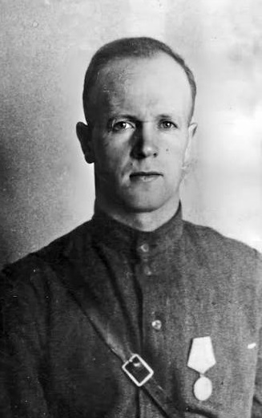
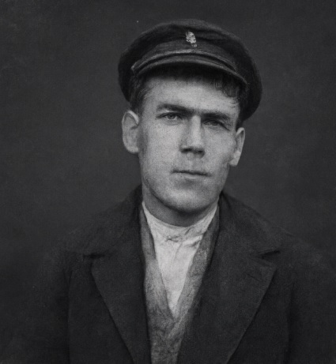
Вера и подпольная группа Ивана Дубоноса
В начале войны красноармейцы, попавшие в окружение, и местные жители, стремившиеся к борьбе с фашистскими оккупантами, действовали разрозненно, между ними необходимо было наладить связь. На роль связной идеально подходила Вера. Она ходила с поручениями, сути которых не понимала — несла бумажные ленточки с цифрами, зашифрованные сообщения. Несколько раз она ходила в Молодечно на железную дорогу, передавала информацию незнакомому мужчине и несла от него сообщения обратно.
Но однажды, когда она шла с очередным сообщением, в деревне Хожево ее встретил другой незнакомец и тихо произнес: «Дзеўка, не хадзі, таго чалавека ўжо забралі». Возможно, он спас ей жизнь. Но выполнять задания она не прекратила, носила сообщения другим связным.
В мае Ивана Григорьевича вместе с другими партизанами — Григорием Сорокиным, Иваном Акимовым («Ванюшей Чапаем»), Михаилом Куприяном — схватили фашисты. 15 мая 1942 года в деревне Шалыги Городокского сельсовета карателям удалось захватить одного партизана. Он не выдержал пыток, выдал отдельных связных и указал место расположения отряда. На отряд было брошено более 200 вооруженных карателей. Однако связные вовремя предупредили об опасности, и партизаны перебазировались в другое место: слишком неравны были силы, чтобы принять открытый бой.
Иван Акимов («Ванюша Чапай») попытался бежать около деревни Холхлово, но был убит. Григория Сорокина, Михаила Куприяна и Ивана Дубоноса фашисты схватили и после жестоких пыток бросили в Вилейскую тюрьму.
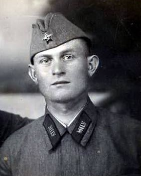
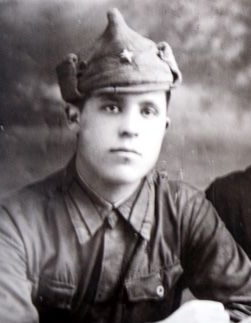
Вера Ивановна искала отца в Городке, в Красном, в Радошковичах. В Радошковичском полицейском участке ее сильно избили на допросе. Немцев интересовали связи отца, с кем встречался, когда, зачем, но Вера на их вопросы не ответила. После этого допроса Вера долго болела. А когда выздоровела — продолжила поиски и нашла отца в Вилейской тюрьме. Им разрешили встретиться только один раз, после этой встречи они с матерью носили в тюрьму смены белья. Но однажды белье не взяли и сказали, что Ивана Григорьевича увезли на работу в Германию. Лишь позже стало известно, что его и других партизан расстреляли у стен Вилейской тюрьмы. Извещение о его смерти Христина Яковлевна получила в октябре 1944 года. Такое же извещение получила и жена Михаила Куприяна.
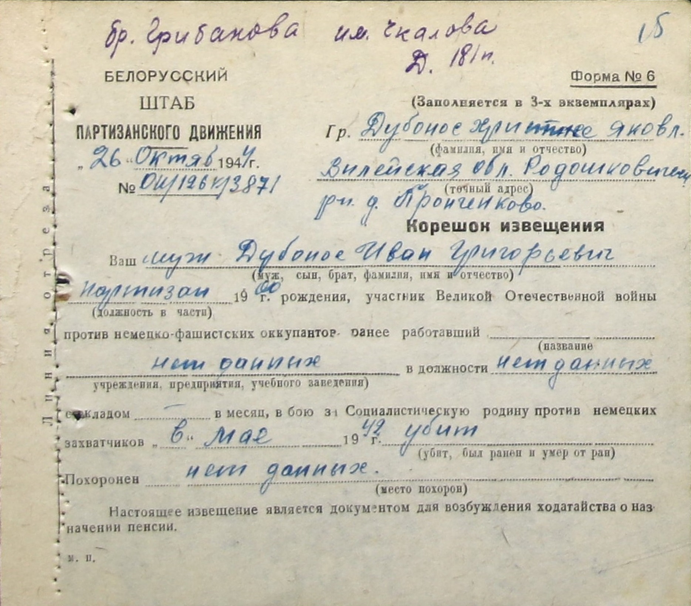
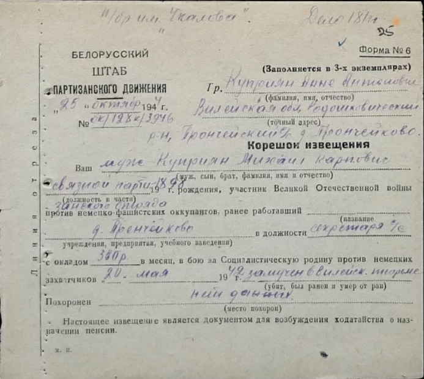
Декабрь 1942 — 1943. Бригада имени В.П. Чкалова
В декабре 1942 года, возвращаясь с очередного задания, Вера проходила мимо гарнизона в д. Городок. Стоявшие там полицаи стали отпускать в адрес молодой девушки шуточки, а один, вроде как заигрывая, тихо произнес: «Уходите, куда можете. За вами придут». Девушка рассказала это партизанам, которые пришли к ним за информацией, и той же ночью их с матерью забрали в отряд. Так 5 декабря 1942 года Христина Яковлевна и Вера стали партизанками бригады имени В.П. Чкалова.
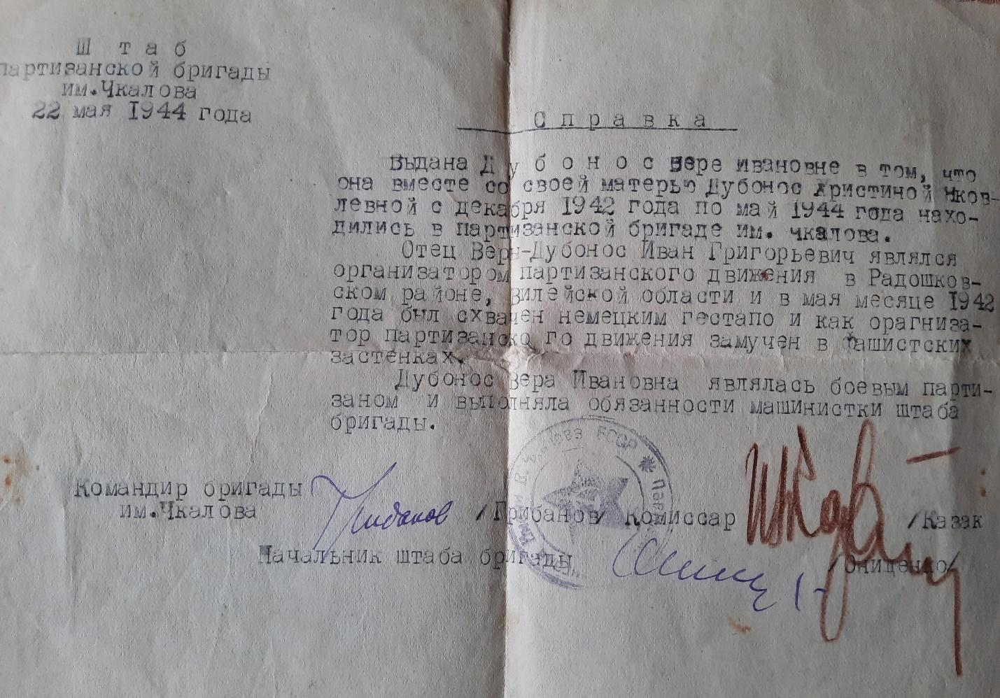
В личном листке по учету кадров указано, что Христина Яковлевна сначала была в отряде им. Кузнецова, затем в отряде «За Советскую Белоруссию», а позже в отряде «26 лет Октября». Вера же попала в отряд «За Советскую Белоруссию», а затем в отряд «26 лет Октября».
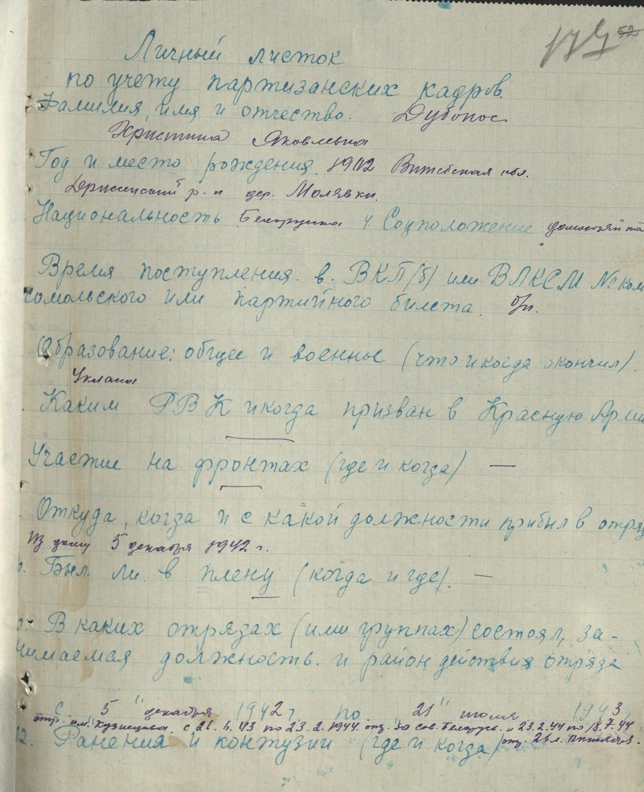
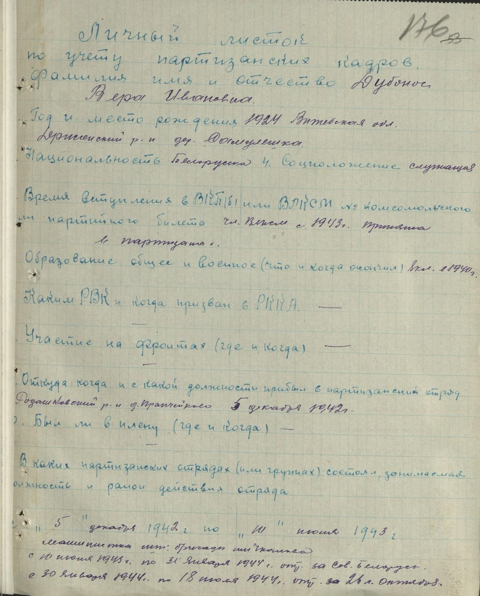
Вера стала машинисткой. Это была очень ответственная работа. В то время, когда немецкая пропаганда разносила весть о своих победах, было важно обеспечить население правдивой информацией о реальной обстановке на фронте, передавать сводки Совинформбюро и приказы командования. Партизанская печать предупреждала об опасности и способствовала срывам мероприятий, которые пытались проводить оккупационные власти. Очень много времени проводила Вера за печатной машинкой в землянке, при скудном освещении, но относилась к этому поручению добросовестно.
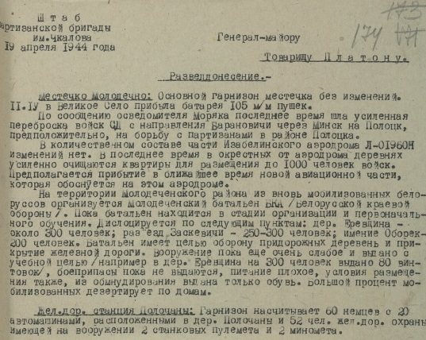
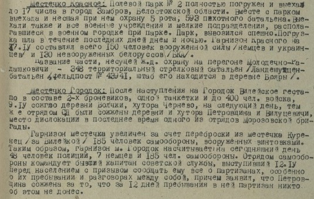
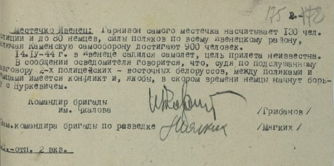
Именно такие документы печатала в землянке Вера Ивановна
Христина Яковлевна была назначена помощником повара. Партизаны сами добывали себе пропитание, и это было нелегкой задачей, так как партизанская бригада со временем пополнялась новыми членами за счет местных жителей. Приходилось собирать в лесу ягоды и грибы, что помогало разнообразить рацион партизан и поддерживать их силы. Умение готовить и заботиться о своих товарищах было неоценимым в условиях партизанской борьбы. Необходимо было оказывать помощь раненым, лечить болезни, катастрофически не хватало медикаментов. Приходилось собирать и сушить чернику, ольховую и березовую кору, лекарственные травы. Когда в пущу стали прилетать самолеты с Большой земли, стало немного полегче.
Вера Ивановна вспоминала, как летними вечерами партизаны собирались у костра и пели песни. Представители Барановичского подпольного обкома партии привезли в партизанскую бригаду песни «Землянка» и «Синий платочек», которые стали для них отдушиной, возвращая на мгновение к мирной жизни и даря надежду на скорую победу. Эти мгновения, когда они могли хоть ненадолго забыть о тяготах войны и окунуться в атмосферу душевного тепла и единения, навсегда остались в памяти Веры Ивановны и Христины Яковлевны.
1943 год. Бригада имени В.П. Чкалова
ЦК КП(б) Б в июне 1943 года принял постановление «О разрушении железнодорожных коммуникаций противника методом рельсовой войны», в котором предложен план уничтожения железных дорог одновременным массовым ударом с целью тем самым сделать невозможным быстрое восстановление противником железнодорожных путей. Рельсовая война должна была сопровождаться крушениями поездов, взрывами мостов и разрушениями станционных сооружений. Партизанские соединения, сражавшиеся на оккупированной территории, широко применяли элементы рельсовой войны, но наиболее значительное влияние на ход войны оказали действия народных мстителей в следующих операциях: «Рельсовая война» (с 3 августа по 15 сентября 1943 года), «Концерт» (с 19 сентября по конец октября 1943 года), партизанские действия в рамках операции «Багратион» (с 23 июня по 29 августа 1944 года).
В донесении командования партизанской бригады им. В. П. Чкалова Барановичской области секретарю Барановичского подпольного обкома КП(б)Б В. Е. Чернышеву о диверсионной деятельности бригады им. Чкалова за период с 1 по 29 июля 1943 г. от 18 августа 1943 г. отмечается, что партизаны бригады осуществляли различные диверсионные акции, направленные на разрушение железнодорожных путей, поездов, мостов и других объектов инфраструктуры, которые использовались немецко-фашистскими войсками для транспортировки военного оборудования, продовольствия и других ресурсов. В основном диверсии осуществлялись на перегонах Молодечно — Красное, Олехновичи — Красное, Юратишки — Богданово, Полочаны — Молодечно, Молодечно — Минск (возле поселка Ждановичи), между Ратомкой и Минском, на перегоне Заславль — Крыжовка.
Герой Советского Союза командир партизанского соединения полковник Роман Наумович Мачульский указывает в воспоминаниях, что партизаны бригады им. В.П. Чкалова Барановичской области за 15 дней пустили под откос 21 вражеский эшелон, уничтожили более 1300 гитлеровцев, перебили 272 рельса, взорвали и сожгли 8 автомашин и 10 мостов.
Карта боевых действий бригады им. В.П. Чкалова (1 июля — 5 августа 1943).
Интерактивная карта составлена на основе архивных документов: донесений и приказов командования партизанской бригады (сборник «Всенародное партизанское движение в Белоруссии в годы Великой Отечественной войны», Т. 2, Кн. 2, док. № 50, 52).
Для рельсовой войны требовался тол, который был дефицитом в окружении партизан. Ада Антоновна рассказала, как мама вспоминала один из способов, которым ее соратники добывали необходимые для диверсий материалы. Партизаны находили авиационные бомбы, снаряды и мины, оставшиеся от боевых действий или сброшенные немецкой авиацией. Эти боеприпасы представляли собой опасный груз, но для партизан служили источником ценных компонентов. На кострах, разведенных прямо на месте, партизаны выплавляли тол в заранее приготовленные формы, в которых он застывал в виде «буханок», как их называли в отряде партизаны. Этот процесс был крайне опасен, так как возможность нештатных ситуаций создавала угрозу для жизни тех, кто занимался выплавкой. Однако, несмотря на риск, эта работа была жизненно важна для успешного проведения диверсий и подрыва вражеских коммуникаций.
Командир диверсионной группы Сергей Баташов, москвич, участвовал в многочисленных операциях по подрыву железнодорожных путей. Однажды во время очередной операции произошел непредвиденный взрыв, который оглушил Сергея и лишил его слуха. Несмотря на это, он сохранял ясность мышления и, помня о договоренности с товарищами о возвращении с задания поодиночке, решил самостоятельно добраться до Налибокской пущи, где дислоцировалась партизанская бригада.
Потерявший слух Сергей понимал, что в таком состоянии ему будет крайне сложно ориентироваться в лесу, полном опасностей. Достигнув ближайшего хутора, партизан уговорил хозяйку отдать ему гуся, который обладал острым слухом и мог реагировать на звуки окружающего мира. С гусем на руках Сергей отправился в путь. Птица, услышав шум, поворачивала голову в нужном направлении, тем самым подавая знак оглушенному партизану. Невероятный союз человека и птицы оказался успешным — боец благополучно добрался до места дислокации бригады, преодолев опасный путь.
Художественная реконструкция. Сгенерировано с помощью ИИ
Этот рассказ показывает, как в условиях войны люди находили новые способы преодоления трудностей и опасностей, обретая небывалые силы и находчивость.
13 июля — 11 августа 1943. Налибокская пуща
Первый этап рельсовой войны начался в то время, когда в Налибокской пуще еще не успела завершиться одна из самых жестоких операций военного времени — операция «Герман», которая длилась с 13 июля по 11 августа 1943 года. Это было очень тяжелое для бригады имени В.П. Чкалова и других партизанских формирований время.
В разгар битвы на Курской дуге руководитель СС и полиции в Белоруссии Курт фон Готтберг приказал очистить от партизан Налибокскую и Липичанскую пущи. «Партизанские отряды должны быть уничтожены, — подчеркивал обергруппенфюрер СС, — их лагеря разрушены, а продовольственные запасы конфискованы».
13 июля оперативные группы СС и полиции приступили к окружению партизанской зоны. Особой жестокостью отличался в этой операции батальон СС Оскара Пауля Дирлевангера. Боевая группа Дирлевангера сочетала боевые действия с карательными акциями. Начиная с 18 июля, штрафной батальон «зачищал» населенные пункты. Из деревень Путники, Володьки, Олехновичи 1-я рота батальона угнала все население в возрасте от 15 до 50 лет. Буквально за три-четыре дня было сожжено 11 населенных пунктов Воложинского района, а всего за время операции немцы и коллаборационисты сожгли 150 населенных пунктов. Жуткая расправа произошла в деревне Доры, находящейся в 8 километрах от Прончейково. В ней эсэсовцы сожгли 106 человек.
Партизанские отряды встретили противника на подступах к зоне ударами маневренных групп, чем задержали продвижение эсэсовцев на два дня. Отдельные партизанские отряды сразу же попытались прорваться через боевые порядки противника. Положение партизан было сложным, так как вражеская армия превосходила их по численности и по оснащению. Партизаны из бригады имени В.П. Чкалова проявили героизм, мужество и отвагу. Они держали оборону в районе деревень Углы, Дубки и Сивица Ивенецкого района — там, где наступал батальон Дирлевангера. Эсэсовцы, поддерживаемые авиацией, неоднократно переходили в атаки, однако партизаны оборонялись стойко, несколько дней вели бои с превосходящими силами противника.
Даже по прошествии многих лет Вера Ивановна с ужасом вспоминала это время. Вместе с Христиной Яковлевной она пряталась в непроходимых болотах. У Веры был наган, и между ней и матерью была договоренность: если враги подойдут слишком близко, она сначала застрелит мать, а затем себя, чтобы не попасть в руки фашистам и не подвергнуться их жестоким пыткам.
В это время произошла одна история, которая навсегда осталась для них загадкой. Фашисты находились совсем близко, поэтому женщины сидели очень тихо, практически без движения, не переговариваясь между собой. Вдруг раздвинулись кусты и прямо на них стала смотреть немецкая овчарка. Вера и Христина Яковлевна мысленно попрощались с жизнью, готовясь к худшему. Но неожиданностью стало то, что собака, не проявляя никакой агрессии или интереса к их убежищу, просто отвернулась и ушла, исчезнув в кустах. Именно так, благодаря непредсказуемости судьбы, им удалось избежать смерти в тот день.
Художественная реконструкция. Сгенерировано с помощью ИИ
Партизаны умело использовали тактику, основанную на распорядке дня оккупантов. Фашисты следили за тем, чтобы все было организовано по часам, и каждый знал, когда начинается и заканчивается определенное действие — обед или перерыв. В этот короткий промежуток времени, когда вражеские солдаты отдыхали и отвлекались от своих обязанностей, партизаны находили возможность маневрировать и действовать незаметно для противника, что было очень важным для выживания и успеха их партизанской деятельности.
В боевой характеристике Христины Яковлевны отмечается: «Участвовала в открытых боях с немцами, где убито 5 и взято в плен 2 немца». У Веры Ивановны также есть запись об участии в открытом бою.
Командование бригады регулярно писало отчеты о действиях партизанских отрядов во время боевых операций. В приказе командования о боевых действиях отрядов бригады за период с 20 июля по 5 августа 1943 г. от 19 августа 1943 года есть запись: «Роты отряда „За Советскую Белоруссию“ обстреливали немцев на переправе через р. Ислочь и делали вылазки с обстрелом в этих населенных пунктах, где было убито 5 гитлеровцев». Можно предположить, что именно в этом бою участвовали Вера Ивановна и Христина Яковлевна.
Проведенная операция по блокировке и прочесыванию пущи немецкой карательной экспедицией показала, что, несмотря на превосходящие как в технике, так и в количестве личного состава силы противника, наши отряды сумели выйти из окружения и сохранили живую силу. В этой борьбе наши партизаны и партизанки показали исключительную выносливость. Таким образом, блокада Налибокской пущи фашистами не принесла им ожидаемых результатов, а стала лишь одной из многих битв в долгой и тяжелой войне. После окончания операции «Герман» партизаны бригады имени Чкалова продолжили свою борьбу до освобождения родной земли от фашистской оккупации.
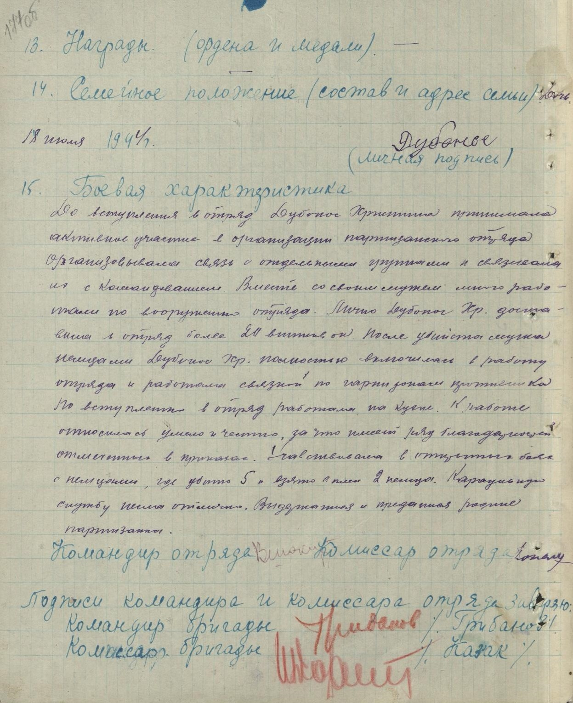
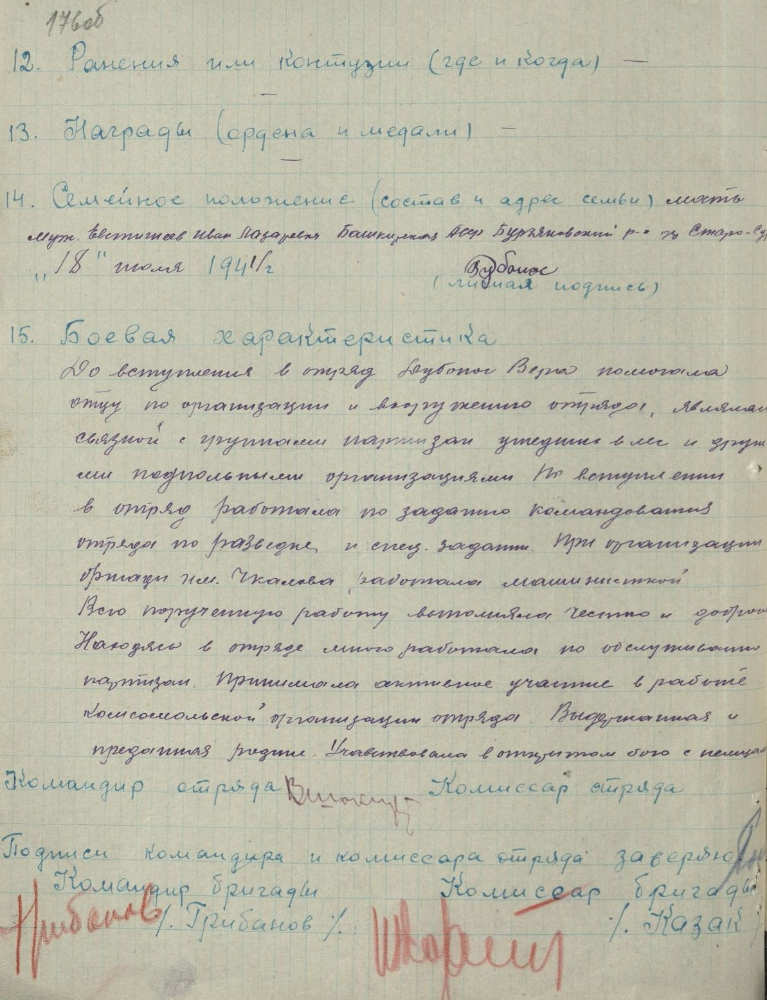
1944–1971
Уже в конце 1943 года началось освобождение Беларуси. 3 июля 1944 года танкисты и пехотинцы 1-го и 2-го Белорусских фронтов освободили от немецко-фашистских захватчиков столицу Беларуси — Минск. 5 июля в ходе Вильнюсской операции войсками 3-го Белорусского фронта при поддержке местных партизанских бригад и отрядов был освобожден город Молодечно. Партизанская бригада им. В.П. Чкалова соединилась с частями Красной Армии в составе 5 отрядов общей численностью 1085 партизан. Из них: мужчин — 953, женщин — 132; белорусов — 638, русских — 292, украинцев — 48, других национальностей — 107; членов ВКП(б) — 55, кандидатов — 70, членов ВЛКСМ — 236, беспартийных — 724.
Пути партизан бригады имени В.П. Чкалова после 5 июля разошлись. Основная часть продолжила борьбу в составе 3-го Белорусского фронта. Кто-то остался восстанавливать тыл. Вера Ивановна вместе с Христиной Яковлевной начали мирную жизнь.
В воскресенье, 16 июля 1944 года, в Минске, на поле бывшего ипподрома в конце Красноармейской улицы, состоялся уникальный парад, практически не имевший аналогов в мировой истории. В торжественном строю шагали народные мстители — около 30 тысяч человек. В этом параде приняла участие и бригада имени В.П. Чкалова во главе с командиром Грибановым М.И.
«Мама не участвовала в этом параде из-за болезни», — вспоминает Ада Антоновна. Вера Ивановна пережила немало испытаний в годы войны. После жестокого допроса в Радошковичском полицейском участке, где ее пытали, она долго болела. Уже в партизанском отряде, во время боевых действий, ее отбросило взрывной волной, и она ударилась головой о дерево. Командование бригады даже приняло решение отправить ее на лечение на Большую землю, однако Христина Яковлевна не могла смириться с мыслью о разлуке с дочерью и отказалась отпустить ее.
После освобождения Беларуси Христина Яковлевна с дочерью вернулись в Прончейково. Вскоре Вера вышла замуж и родила дочь Аду. В тяжелое послевоенное время многие искали работу по всему Советскому Союзу. Попытался уехать в Москву и муж Веры Ивановны, однако судьба рассудила иначе — на станции Олехновичи он опоздал на поезд до Москвы. Там же, на станции вербовщик уговорил его уехать в Эстонию. Так семья Дубонос-Кобан оказалась в городе Кохтла-Ярве, где прожила до 1971 года. Христина Яковлевна очень хотела вернуться в родные места, и они всей семьей переехали в Молодечно, где и по сей день живет Ада Антоновна.
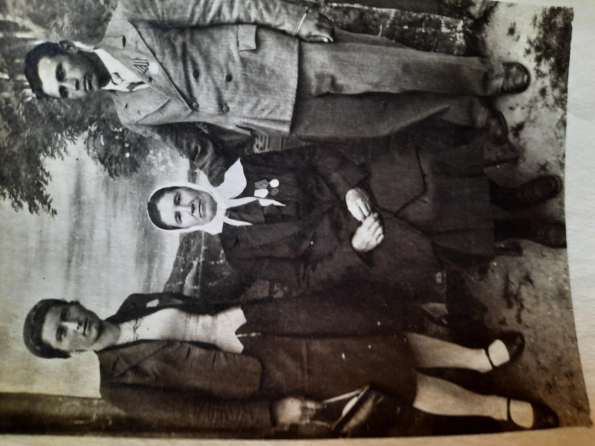
Роль истории семьи Дубонос в сохранении памяти о войне
История семьи Дубонос является важным элементом сохранения коллективной памяти о Великой Отечественной войне. В отличие от многих ветеранов, которые предпочитали не рассказывать об участии в военных действиях, мама и бабушка Ады Антоновны делились с ней своими воспоминаниями и историями, а она, в свою очередь, поделилась этой информацией с нами. Кроме того, Ада Антоновна хранит документы, письма, фотографии, связанные с историей своей семьи.
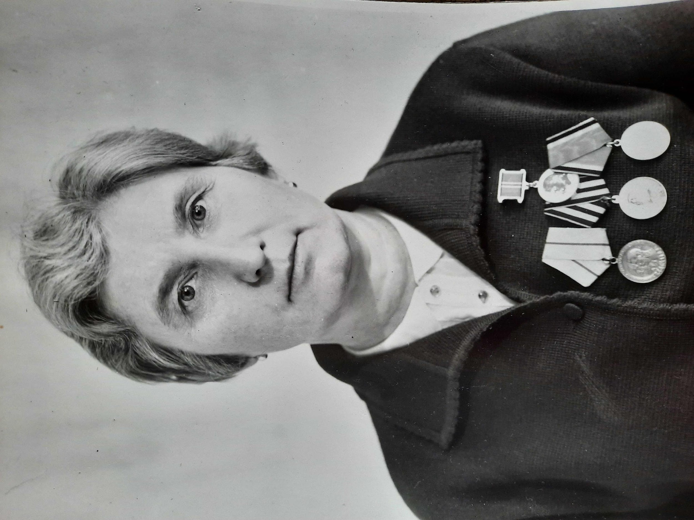
Вера Ивановна в свое время принимала участие во встречах со школьниками, где делилась своими воспоминаниями о военных событиях. В День Победы члены семьи Дубонос традиционно посещали памятник партизанам в д. Прончейково, поставленный в 1978 году в честь подпольщиков, которые создали партизанский отряд имени Кузнецова, и партизан этого отряда. На гранитных валунах прикреплены две мемориальные доски из силумина, на которых указано, что одними из первых участников прончейковской партизанской группы были Дубонос Иван Григорьевич, Куприян Михаил Карпович, Сорокин Григорий Петрович, Акимов Иван Федорович, которые геройски погибли в 1942 году в борьбе с гитлеровскими оккупантами.
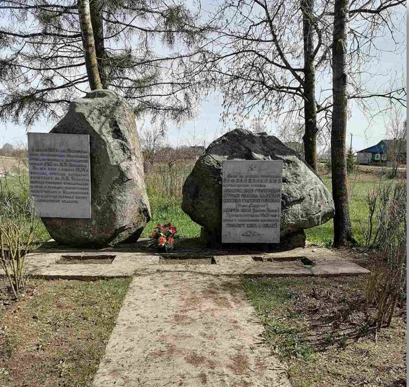
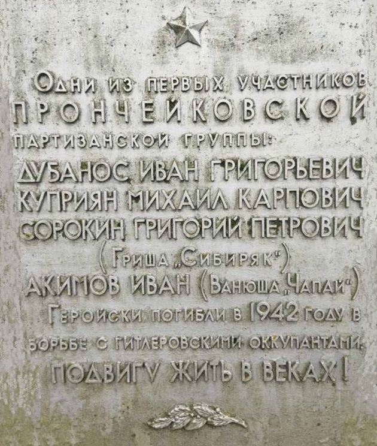
Памятник партизанам в Прончейково стоит на земле, которая была свидетельницей тех событий. Здесь жили Иван Григорьевич, Христина Яковлевна и Вера. Здесь сегодня живем мы, учимся в школе, ходим по тем же дорогам. Память о них — это не только страницы учебников, это наша улица, наша школа, наша земля.
У Ады Антоновны сохранились медали ее матери, что является дополнительным напоминанием о прошлом и свидетельством коллективной памяти. Благодаря устным рассказам, семейным архивам, участию в мероприятиях и праздниках, сохранению артефактов и передаче традиций и историй, семья Дубонос способствует сохранению и распространению коллективной памяти о войне в обществе.
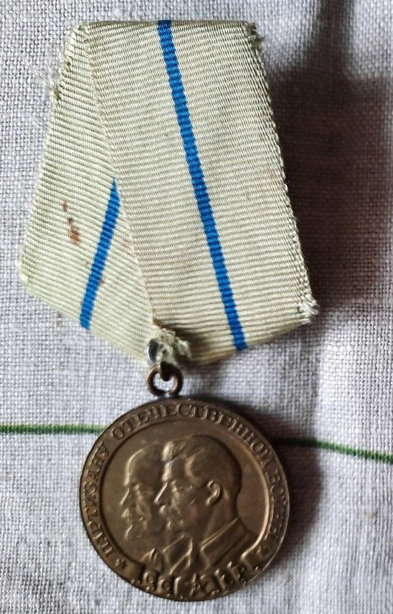
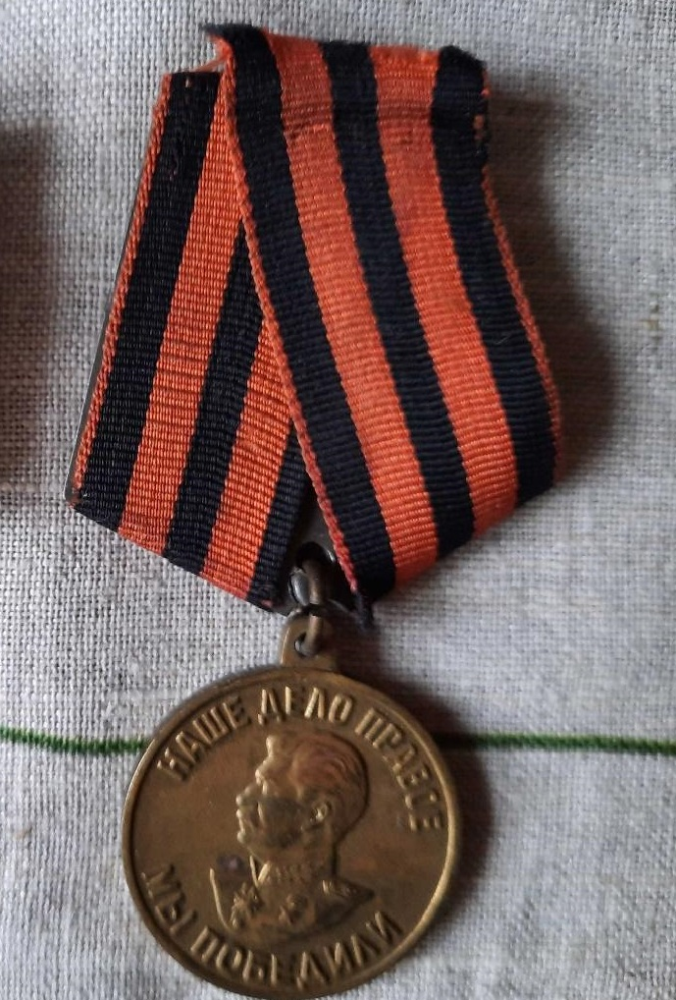
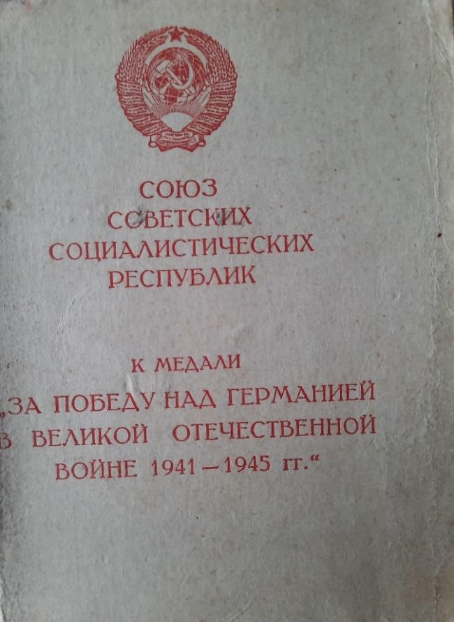
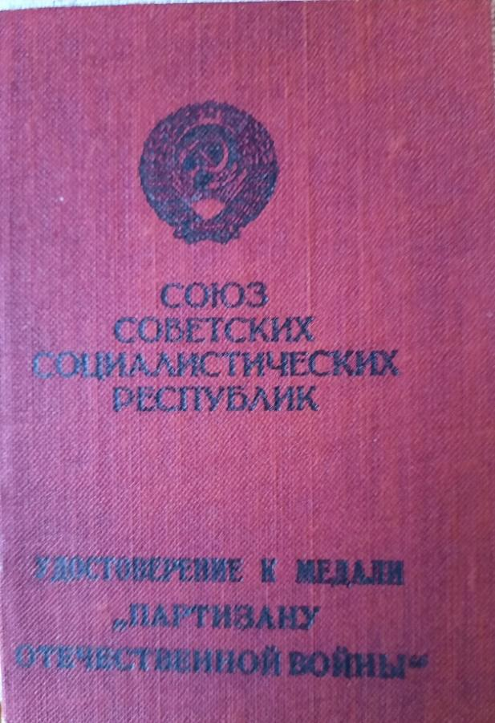
Когда говорят о «Женском лице Победы», часто представляют санитарок или снайперов. Но за этими словами стоят не только те, кто воевал на фронте.
За этими словами стоят и те женщины, которые заботились о своих товарищах в партизанском отряде, рисковали жизнью, будучи связными, печатали сводки в сырой землянке. Женщины, которые в болотах Налибокской пущи были готовы умереть, но не попасть в руки врагу.
Именно такими были Христина Яковлевна и ее дочь Вера. Их подвиг — это не громкие слова, а тихое, каждодневное мужество. Это способность сберечь человеческое достоинство в нечеловеческих условиях.
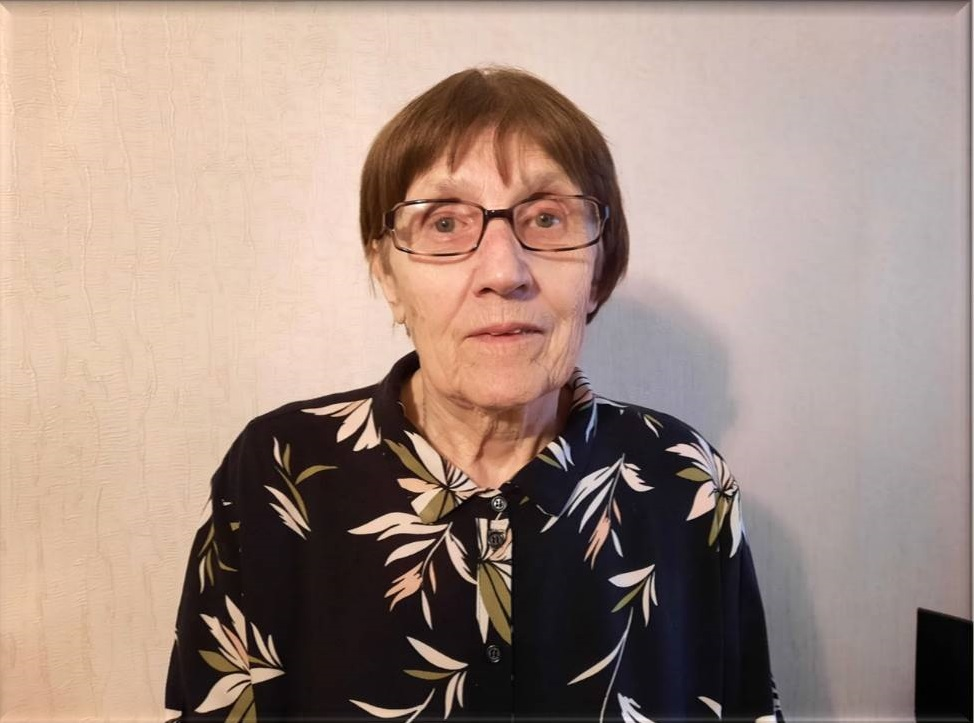
Ради того, чтобы завтра взошло солнце, они жертвовали собой. Спустя годы об этом говорит Ада Антоновна. Ее слова учат нас ценить мир и помнить, какой ценой он достался.
«Разговаривая с мамой и ее ровесниками, я понимала, насколько им важно, чтобы невоевавшие поколения не забывали о том, что прошлое оставило нам уроки, полные боли и страданий. Они должны понимать, что война – это не только героические подвиги и славные победы, это страх, горе, страдания, потери и разрушения. Мы должны говорить с ними о том, что значит быть человеком, который заботится о мире и сострадании, должны учить их ценить жизнь и всегда искать пути к примирению и взаимопониманию. Люди, прошедшие войну, верили, что, держа в уме уроки прошлого, их потомки создадут будущее, в котором следующие поколения смогут жить в мире и гармонии, не зная страха и боли войны».